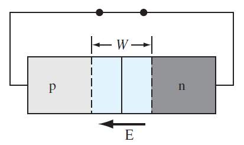
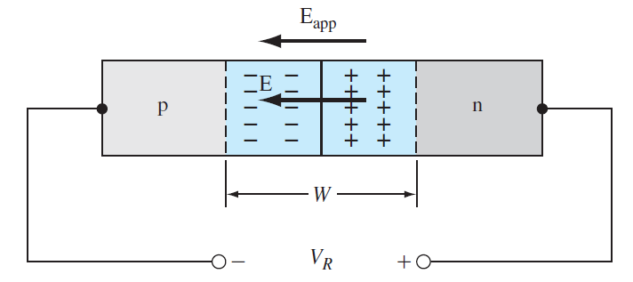
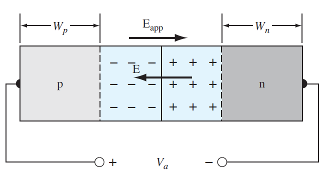
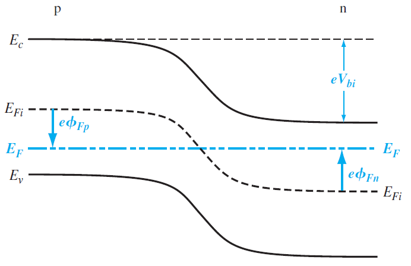
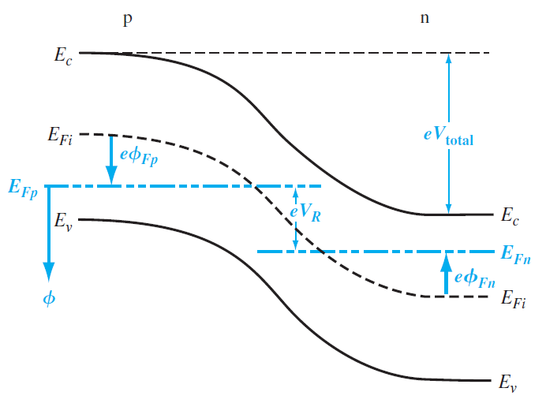
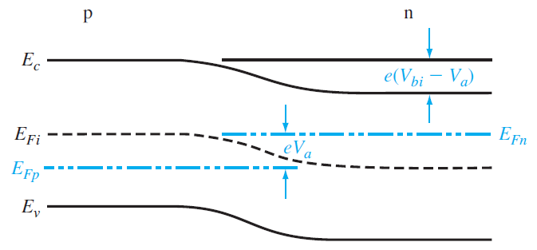

Equilibrio térmico: Implica que ninguna fuerza externa tales como voltaje, campos eléctricos o magnéticos, o gradientes de temperatura están actuando sobre el semiconductor.
El comportamiento de la unión PN se puede entender atendiendo a tres casos que se describen de forma resumida en la siguiente tabla.| Sin polarización | Polarización inversa | Polarización directa | |
|---|---|---|---|
| Condiciones |
|
|
|
| Diagrama eléctrico |  |
 |
 |
| Características |
|
||
| Diagrama de bandas de energía |  |
 |
 |
| Potencial formado entre las regiones P y N | \begin{equation} V_{bi} = |\phi_{Fn}| + |\phi_{Fp}| \end{equation} | \begin{align} V_{total} & = |\phi_{Fn}| + |\phi_{Fp}| + V_R \\ & = V_{bi} + V_R \end{align} | \begin{align} V_{total} & = |\phi_{Fn}| + |\phi_{Fp}| - V_a \\ & = V_{bi} - V_a \end{align} |
El voltaje interconstruido puede definirse como la diferencia entre los niveles de energía intrínsecos de Fermi en las regiones P y N, conduciendo a la forma final: \begin{equation} V_{bi} = V_t \ln \left( \frac{N_aN_d}{n^2_i} \right) \end{equation} donde $ V_t = \frac{ k_BT }{ e } = 0.026V $ es el voltaje térmico.
La obtención de la ecuación final parte de la definición
\begin{equation}
V_{bi} = |\phi_{Fp}| + |\phi_{Fn}|
\end{equation}
(Nota: Todos los cálculos y los parámetros usados son considerando que el sistema se encuentra en equilibrio térmico).
| Región P | Región N | |
|---|---|---|
| Definición de concentraciones de portadores | Concentración de huecos (aceptores) en la banda de conducción: \begin{equation} p_0 = N_a = n_i \exp \left( \frac{E_{Fi} - E_F}{k_B T} \right) \end{equation} | Concentración de electrones (donadores) en la banda de conducción: \begin{equation} n_0 = N_d = n_i \exp \left( \frac{E_F - E_{Fi}}{k_B T} \right) \end{equation} |
| Definición del potencial como diferencia de energías | La energía de Fermi intrínseca de la región P es mayor que la energía de Fermi. \begin{equation} e\phi_{Fp} = E_{Fi} - E_F \end{equation} | La energía de Fermi intrínseca de la región N es menor que la energía de Fermi. \begin{equation} e\phi_{Fn} = E_{Fi} - E_F \end{equation} |
| Sustitución del potencial en las concentraciones | \begin{equation} N_a = n_i \exp \left( \frac{ e\phi_{Fp} }{k_B T} \right) \end{equation} | \begin{equation} N_d = n_i \exp \left( \frac{ -(e\phi_{Fn}) }{k_B T} \right) \end{equation} |
| Despejando el potencial | \begin{equation} \frac{N_a}{n_i} = \exp \left( \frac{ e\phi_{Fp} }{k_B T} \right) \end{equation} \begin{equation} \rightarrow \ln \frac{N_a}{n_i} = \frac{ e\phi_{Fp} }{k_B T} \end{equation} \begin{equation} \rightarrow \phi_{Fp} = \frac{k_B T}{e} \ln \left( \frac{N_a}{n_i} \right) \end{equation} | \begin{align} \frac{N_d}{n_i}= \exp \left( \frac{ -(e\phi_{Fn}) }{k_B T} \right) \end{align} \begin{align} \rightarrow \ln \frac{N_d}{n_i} = \frac{ -(e\phi_{Fn}) }{k_B T} \end{align} \begin{align} \rightarrow \phi_{Fn} = -\frac{k_B T}{e} \ln \left( \frac{N_d}{n_i} \right) \end{align} |
Index